NEXUS A / Consola: candidato H4 + UI Rutas web reales sin servicios configurados y escenas Session/Biblioteca con DATOS SINTETICOS. No son pruebas de Android, camara, autenticacion ni subida reales.
Etapa 3 | Etapa 4
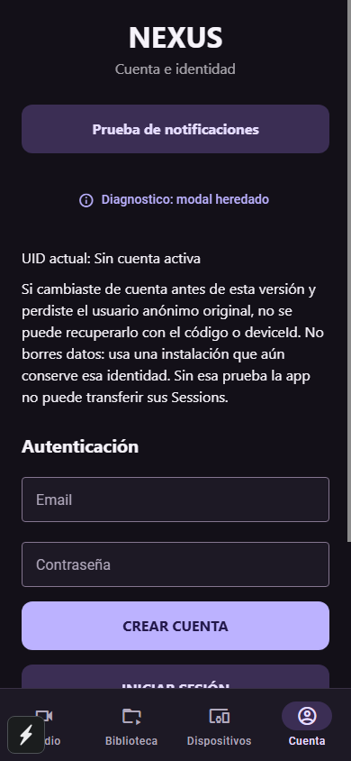
stage4-account-dark.png 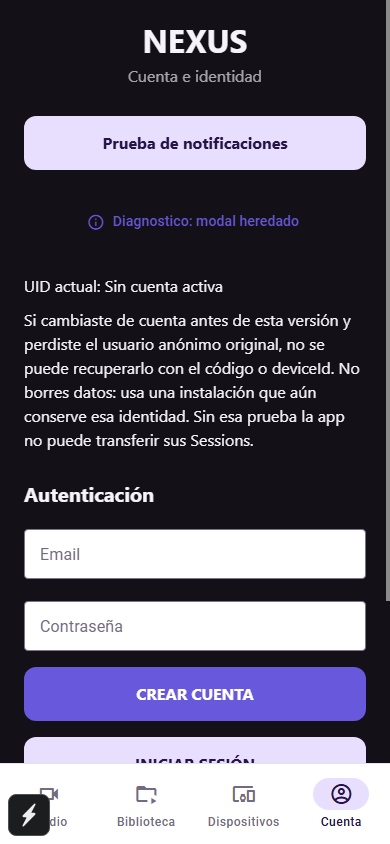
stage4-account-light.png 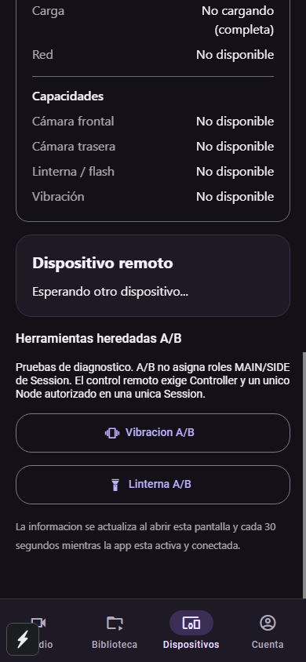
stage4-devices-tools.png 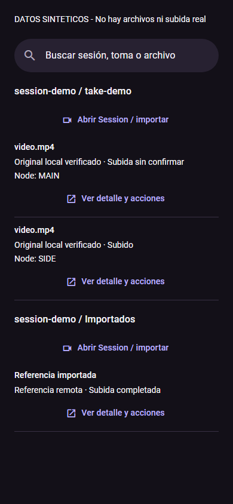
stage4-library-fixtures.png 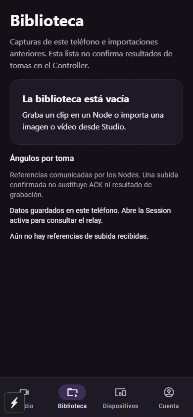
stage4-library-mobile.png 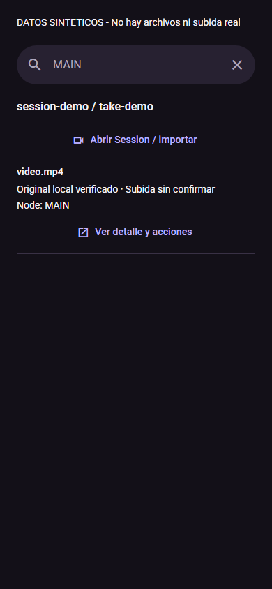
stage4-library-search.png stage4-media-missing.png 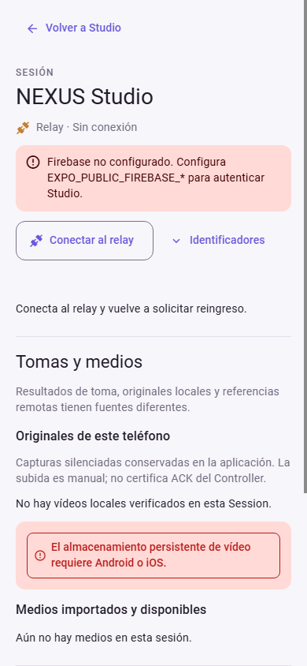
stage4-session-actual-route-disconnected.png 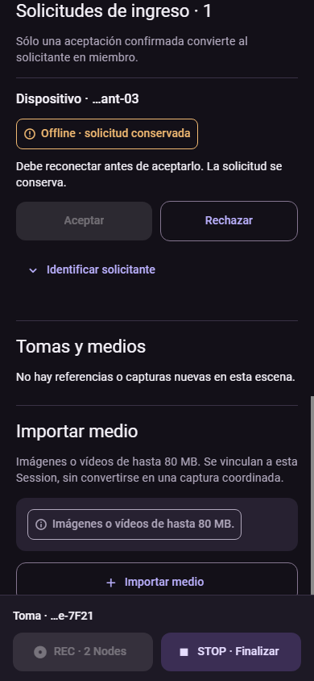
stage4-session-admission-offline.png 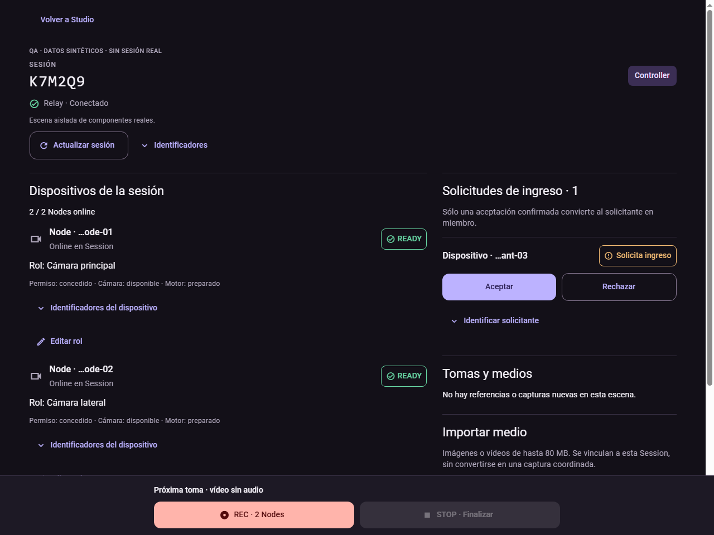
stage4-session-controller-desktop.png 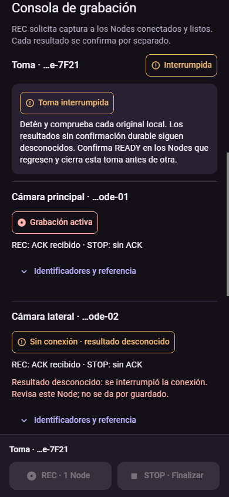
stage4-session-controller-interrupted.png 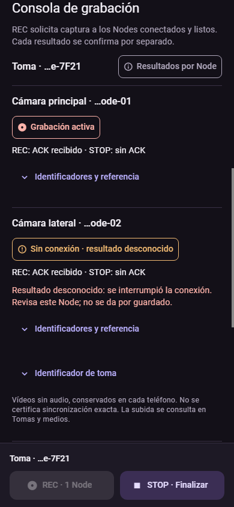
stage4-session-controller-partial.png 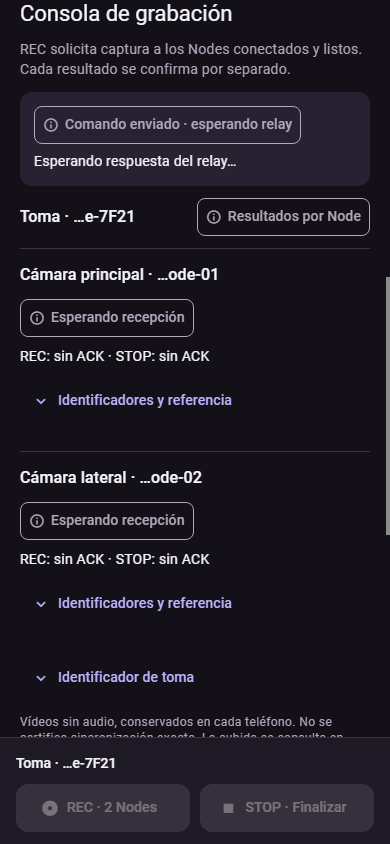
stage4-session-controller-pending.png 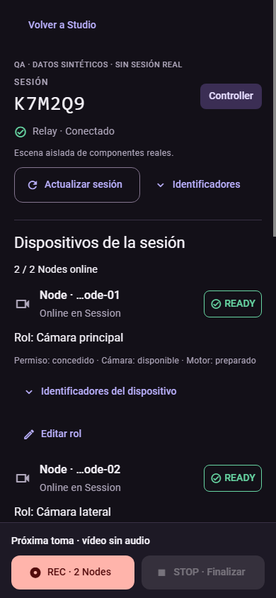
stage4-session-controller-ready.png 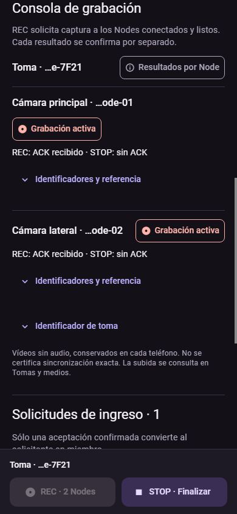
stage4-session-controller-recording.png 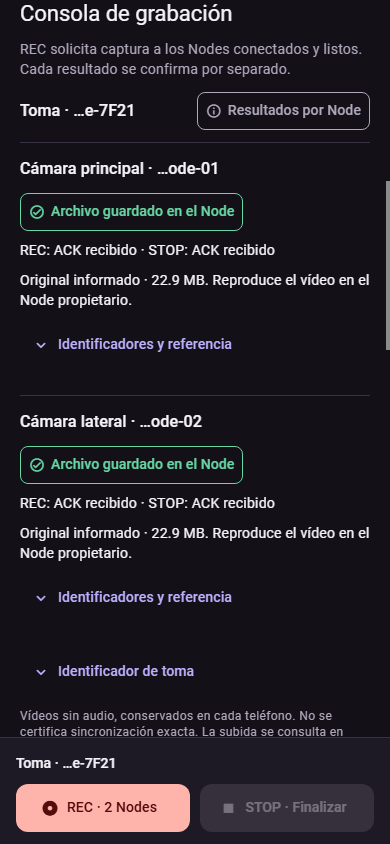
stage4-session-controller-saved.png stage4-session-deep-link.png 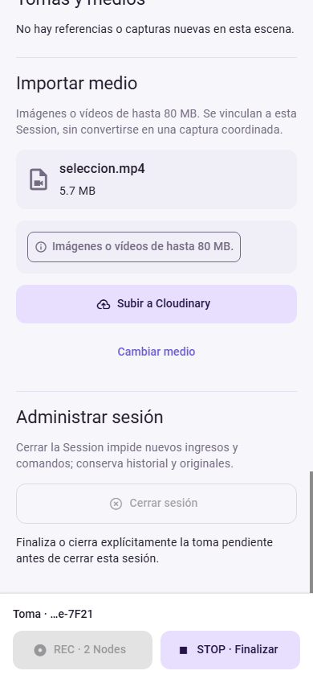
stage4-session-import-light.png 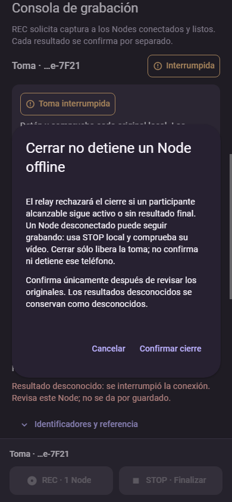
stage4-session-interrupted-confirmation.png 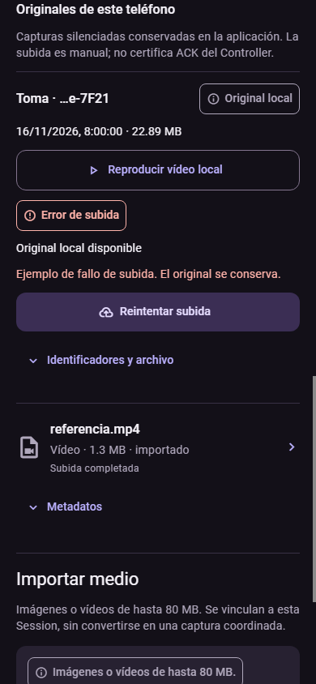
stage4-session-local-original.png 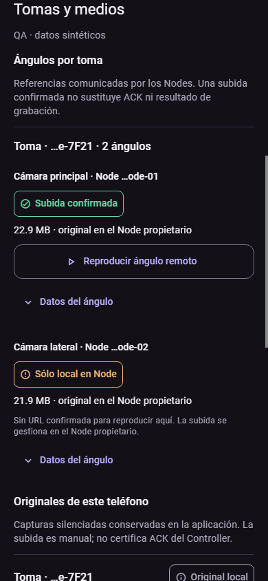
stage4-session-media-angles.png 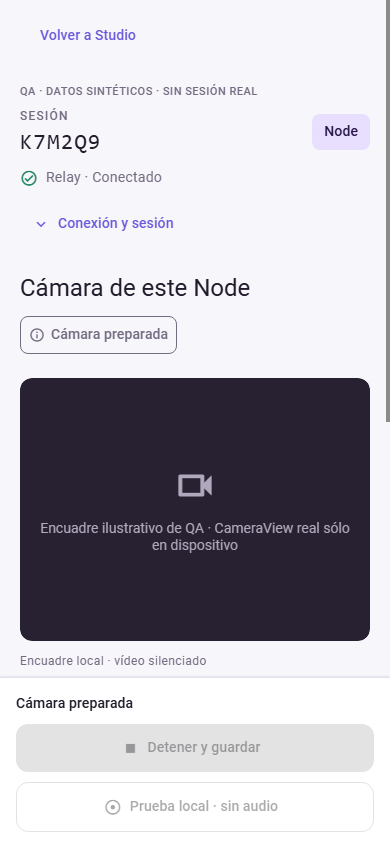
stage4-session-node-light.png 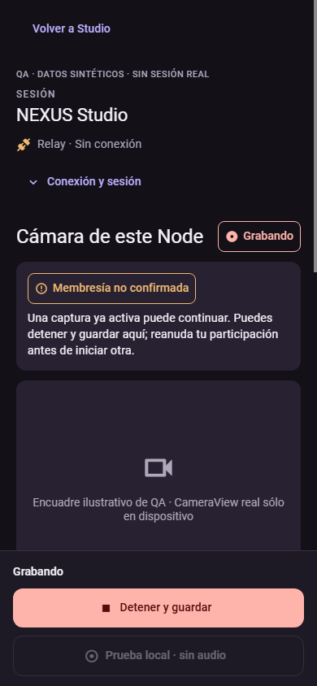
stage4-session-node-offline.png 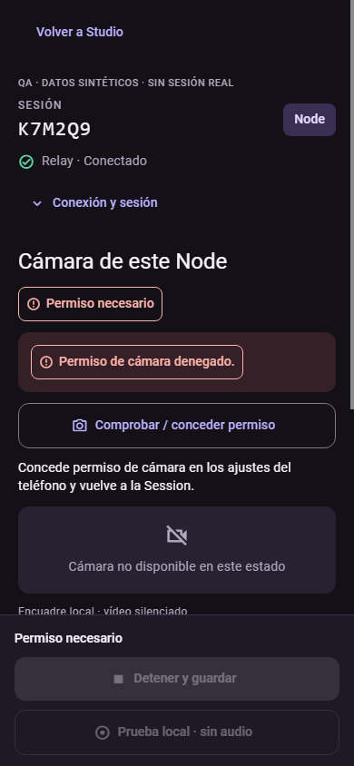
stage4-session-node-permission.png 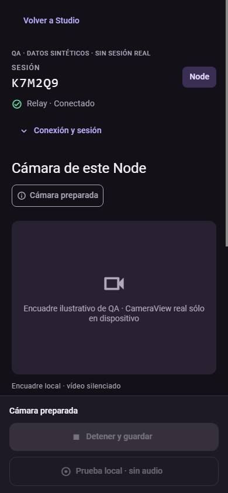
stage4-session-node-ready.png 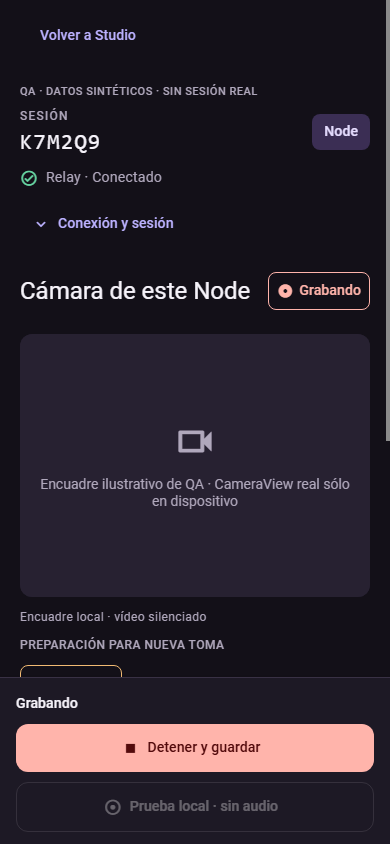
stage4-session-node-recording.png 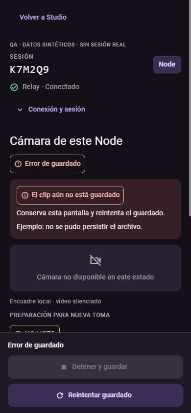
stage4-session-node-save-error.png 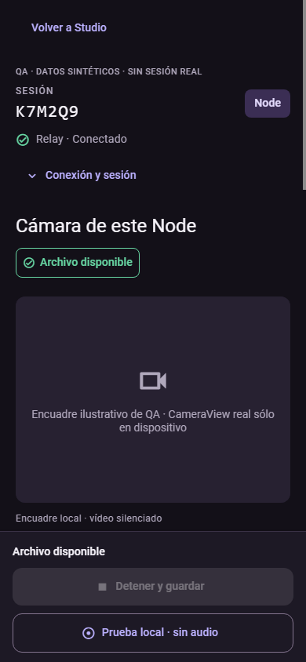
stage4-session-node-saved.png 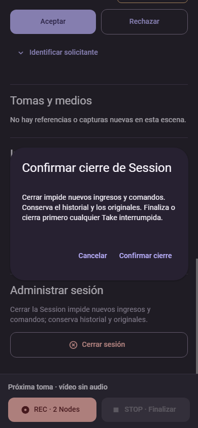
stage4-session-session-close.png 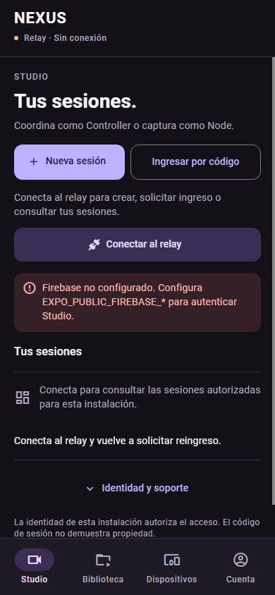
stage4-studio-mobile.png 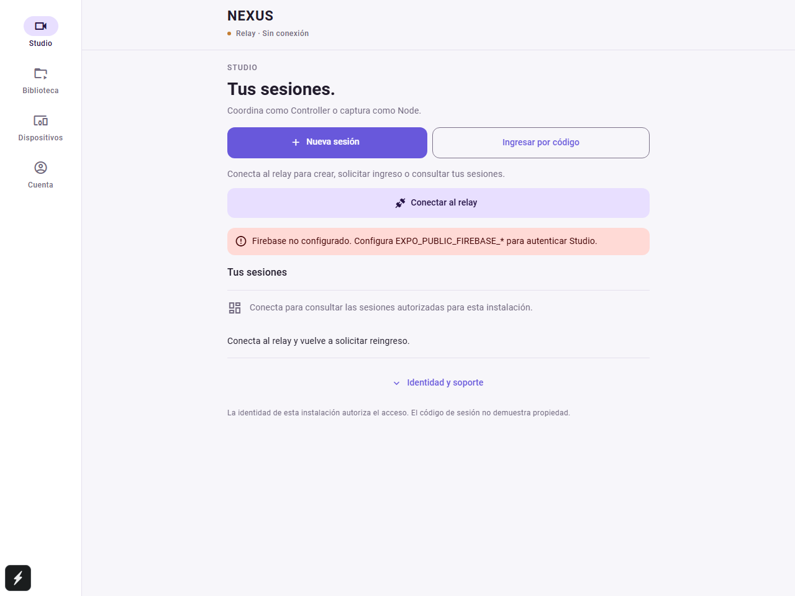
stage4-studio-rail.png